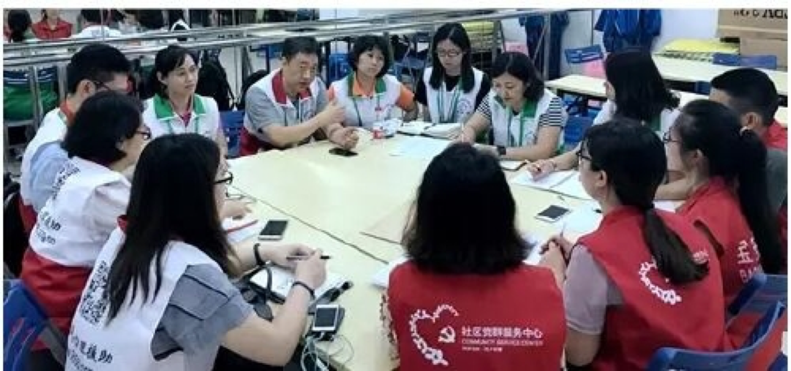

精品项目【春风计划——性侵遭遇者及家庭援助】
2014-10-13 21:18:00
(亚洲家庭治疗联盟3A计划“杰出奖”，“十佳慈善公益中国经验”)
春风计划发起于2005年，九年来，春风使者们致力于预防与应对性侵害的宣传、培训与遭遇者援助，为1400多人次提供了直接的心理、法律等援助，提供公益培训、讲座6000多人次，通过春风网获得预防知识、应对技能的受益者过百万。新华网、China Daily、人民日报、CCTV、中国妇女、南方日报、广东卫视、北京青年报等各级媒体播报近百次。
[“123，对性骚扰说不！”]
12月3日 在深圳慈善基金支持下，"春风计划"携手深圳广播电台898新闻频率共同主办九大场所全城联动、全程广播跟踪报道的大型公益活动 “123，对性骚扰说不！”，参与者逾十万。
[“春风网--中国性侵害预防网”]
2006年9月29日 “春风网——中国性侵害预防网”成立。中国大陆第一个宣传预防性侵害知识、帮助性侵犯受害者的专业网站，中国大陆第一个集预防、联络、救助、支持于一体的性侵犯受害者公益援助体系初具规模。
[“防范性骚扰”专辑]
2008年12月 春风网地面服务走出深圳
2008年12月3日 发布《中国妇女权益保护法专辑》
2006年11月28日 发布《防范性骚扰专辑》
图为隋双戈博士、周炜杰咨询师等春风使者为受事件影响居民提供团体心理辅导
工作坊结束后，深圳市春风应激干预服务中心春风心理援助行动队与宝安区西乡社区党群服务中心联席会议，小 结本次工作。参与者及西乡党群服务中心工作人员肯定了春风的服务成效，明显看到工作坊前后服务对象的变化。
共10位春风心理援助行动队志愿者参与了服务，西乡社区党群服务中心提供了通知、组织以及场地支持。 图为隋双戈博士、周炜杰咨询师等春风使者为受事件影响居民提供团体心理辅导
中国心理学会注册督导师、心理应激干预专家隋双戈博士在本次援助结束时表示：716事件造成社会心理冲击的处理，包括信息发布、媒体导向，心理援助的组织、支持，全体市民群防群治能力提升等方面，需要在党和政府引领下，更多社会力量的参与，合力解决。
感谢
西乡社区党群服务中心的大力支持和为相关人群身心健康做出的努力!感谢西乡社区相关居民的热情参与! 深圳市春风应激干预服务中心也将不断继续努力，为预防与化解创伤传播知识技能、提供干预服务、培育骨干人才做出更大贡献!
参与本次服务的春风使者(志愿者)包括：
- A组(现场工作)：隋双戈 柯阳芳 周炜杰 李 豪 李黎众 秦 红 陈冬娜 耿 超 林开心
- B组(后方支持)：陈启鸣